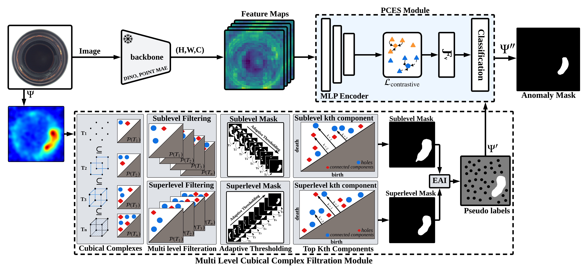
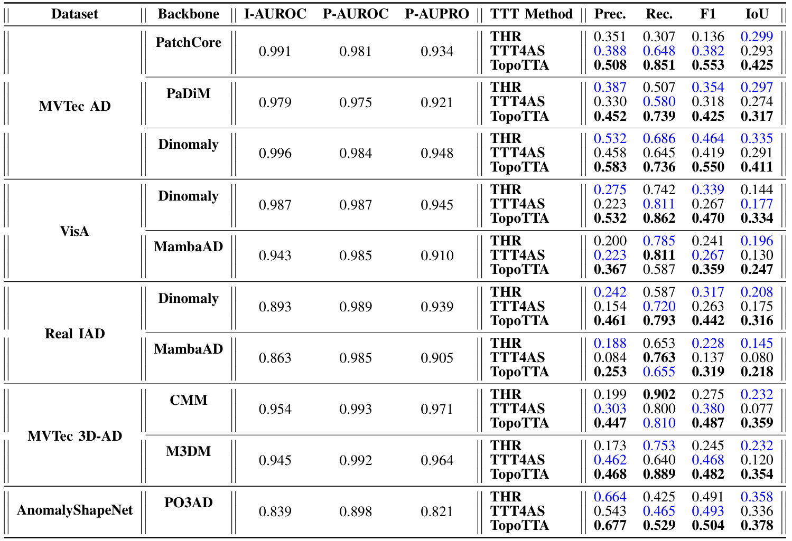
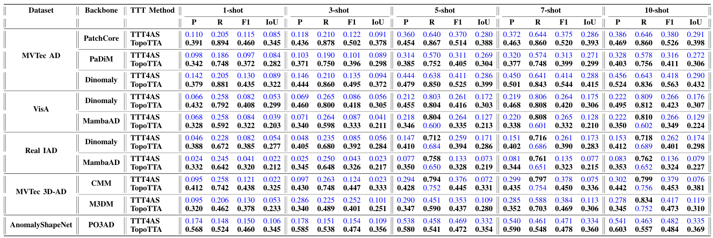
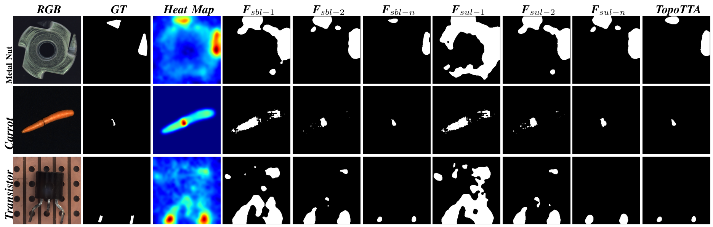
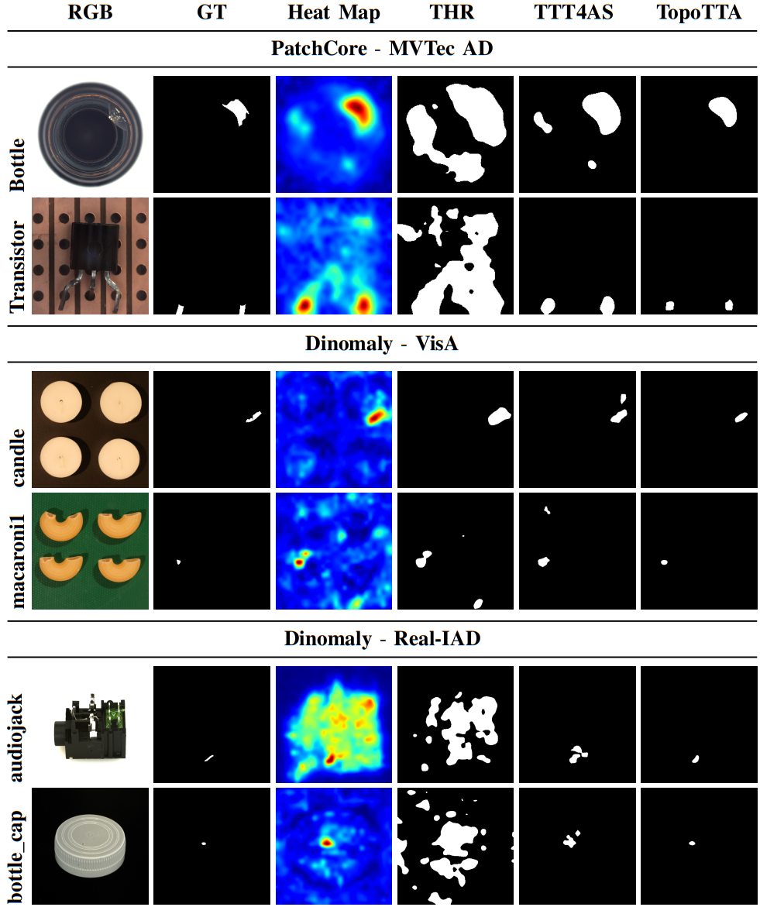
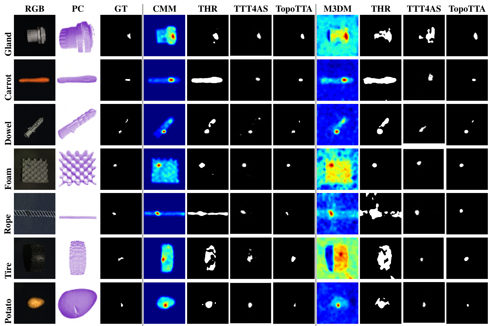

Test-time adaptation (TTA) has emerged as a promising paradigm for mitigating distribution shifts in deep models. However, existing TTA approaches for anomaly segmentation remain limited by their reliance on pixel-level heuristics, such as confidence thresholding or entropy minimisation, which fail to preserve structural consistency under noise and texture variation. Moreover, they typically treat anomaly maps as flat intensity fields, ignoring the higher-order spatial relationships that characterise complex defect geometries.
We introduce TopoTTA (Topological Test-Time Adaptation), a novel framework that integrates persistent homology, a tool from topological data analysis, into the TTA pipeline to enforce geometric and structural coherence during adaptation. By applying multi-level cubical complex filtration to anomaly score maps, TopoTTA derives robust topological pseudo-labels that guide a lightweight test-time classifier, enhancing segmentation quality without retraining the backbone model. The approach eliminates heuristic thresholding, preserves connectivity, and generalises across both 2D and 3D modalities.
Extensive experiments across five standard benchmarks (MVTec AD, VisA, Real-IAD, MVTec 3D-AD, and AnomalyShapeNet) demonstrate an average 15% F1 improvement over state-of-the-art unsupervised anomaly detection and segmentation methods, with the largest gains on anomalies exhibiting complex geometric or structural variations.
These findings suggest that integrating topological reasoning into test-time adaptation provides a principled route to structure-aware generalisation, bridging the gap between geometric learning and robust adaptation.





